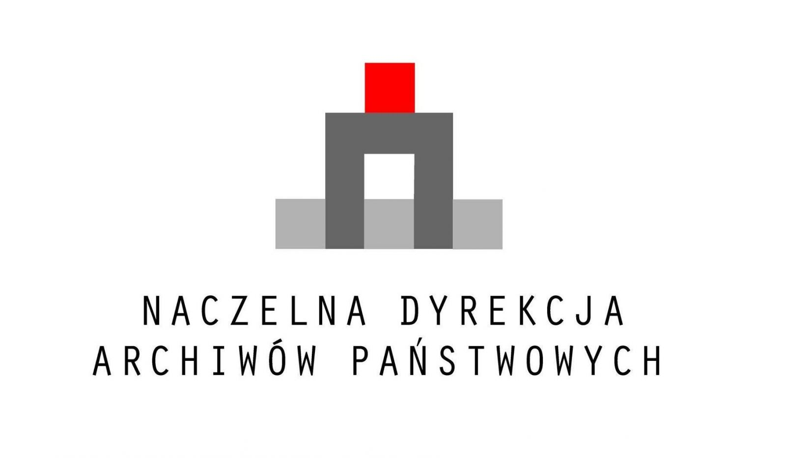

Historia
Welecja jest jedną z najstarszych, a po Konwencie Polonia i Arkonii trzecią najstarszą współcześnie istniejącą polską korporacją akademicką. Powstała w Rydze w wyniku rozłamu w Arkonii, do którego doszło w maju 1883 r. W początkach roku akademickiego 1883/1884 r. kilkudziesięciu byłych Arkonów oraz grupa innych studentów Polaków powołała do życia Welecję. Nazwa korporacji pochodzi od Wieletów, grupy plemiennej Słowian połabskich o demokratycznej strukturze społecznej.
Nazwa odzwierciedlała ukierunkowanie ideowe nowej korporacji. W odróżnieniu od “konserwatywnej” Arkonii miała ona charakter - według ówczesnej nomenklatury - “postępowy”. W pierwszych dziesięcioleciach istnienia, okresie największego rozkwitu, liczba członków czynnej Welecji przekraczała 100 osób. W 1907 r. powstało w Warszawie Stowarzyszenie Filistrów Welecji zrzeszające Weletów, którzy ukończyli już studia i opuszczali szergi czennej korporacji.
W czasie pierwszej wojny światowej w 1915 r. w związku z ewakuacją Politechniki Ryskiej do Moskwy także Welecja przeniosła swą siedzibę do stolicy Rosji, gdzie działała do 1918 r. W tym czasie za zgodą przebywających w Warszawie członków korporacji w 1916 r. powstała tak zwana Welecja Warszawska. W listopadzie 1918 r. podjęto decyzję o przeniesieniu oficjalnej siedziby Welecji do Warszawy i uznaniu członków Welecji Warszawskiej za prawowitych członków Welecji.
Welecja należała do największych i najbardziej prężnych korporacji okresu międzywojennego. Była jedną z sześciu korporacji, które w 1921 r. utworzyły Związek Polskich Korporacji Akademickich. Ze względu na różnice poglądów, w szczególności rozumienia zasady apolityczności korporacji oraz stosunku korporacji związkowych do obozu sanacyjnego oraz postępującego zbliżenia się Związku do obozy narodowo-demokratycznego, w latach 1933-1938 pozostawała w wyniku podjętej przez siebie uchwały poza strukturami Związku.
Przy Welecji kandydowały korporacje: Chrobacja, Audacja, Legetia oraz Virtutia. W okresie międzywojennym Welecja jako jedyna obok Arkonii polska korporacja posiadała własny dom, który znajdował się przy ul. Chocimskiej 4 w Warszawie. Był to jedyny dom korporacyjny wybudowany specjalnie na siedzibę korporacji akademickiej. Koszty budowy pokryte zostały ze środków Korporacji Akademickiej Welecja i Stowarzyszenia Filistrów Welecji.
W czasie wojny Weleci spotykali się w kraju, w niewoli i na emigracji. Przyjęto wtedy ostatnich przed 2002 r. członków korporacji. Komersze Welecji odbywały się nawet w oflagu w Woldenbergu. Wielu Weletów wzięło czynny udział w walkach na wszystkich frontach wojny składając ofiarę życia.
W okresie powojennym odbywały się konspiracyjne komersze i spotkania Welecji. Chociaż oficjalnie funkcjonować nie mogła, Welecja nigdy nie zaprzestała swojej działalności. W 1983 r. w Londynie i Warszawie odbyły się uroczyste obchody 100-lecia powstania korporacji. W 1979 r. w kościele Najświętszego Zbawiciela w Warszawie odsłonięto tablicę upamiętniającą “zmarłych, pomordowanych i poległych za Ojczyznę” Weletów, a w 1988 r. na ścianach kościoła pw. św. Karola Boromeusza na warszawskich Powązkach tablicę epitafijną Weletów pomordowanych na Wschodzie. W 1989 r. ukazała się księga pamiątkowa Polska Korporacja Akademicka Welecja 1883-1988 (”Księga 100-lecia Welecji”).
W dniu 29 października 2016 roku Stowarzyszenie Filistrów Welecji zakończyło inwentaryzację zespołu archiwalnego "Korporacja Akademicka Welecja" przeprowadzoną w ramach projektu „Opracowanie i zabezpieczenie archiwum Korporacji Akademickiej Welecja".
Projekt jest współfinansowany ze środków otrzymanych od Naczelnego Dyrektora Archiwów Państwowych w ramach konkursu "Wspieranie działań archiwalnych 2016".